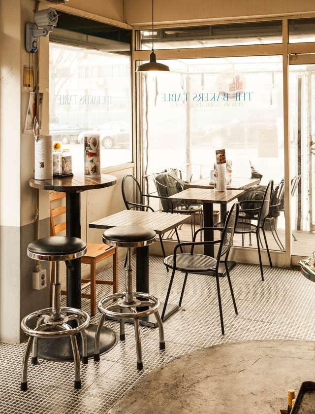

The Baker's Table 더 베이커스 테이블
- Address
- 244-1 Noksapyeong-daero (녹사평대로 244-1)
- The story
- Micha Richter, a German chef, first came to Seoul on assignment at a five-star hotel and has now lived in the city for 25 years. Every Christmas season he bakes stollen using the recipe his father and grandfather made, marinating the dried fruit in rum and watching the dough's temperature and consistency by hand. As he told the Korea JoongAng Daily, rushing the process or skimping on the butter, candied fruit, raisins, rum, flour, and spices misses what makes a stollen right.
- Order this
- German breads — Hard Roll, Bretzel, Vollkorn (whole-grain loaf); stollen in the Christmas season.
- Say this in Korean
- 슈톨렌 있어요?Syutollen isseoyo? · Do you have stollen?
- Good to know
- The breakfast spot near the house. Stollen is seasonal (December).
Open in Google Mapstoday's hours and photos
Source
Korea JoongAng Daily (Christmas-season article), https://www.koreajoongangdaily.com/lifestyle/german-stollen-has-stolen-the-hearts-of-koreans-this-christmas-season/10511257 ; shop information: thebakerstable.co.kr